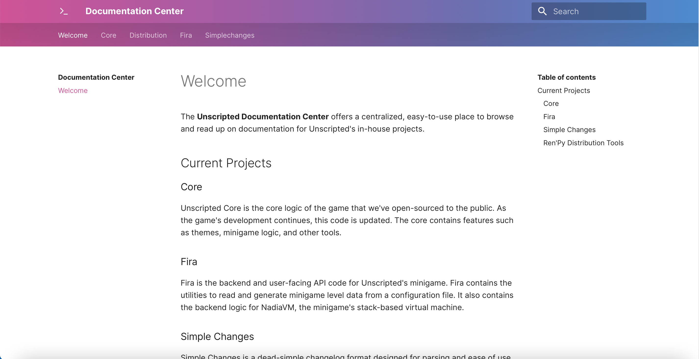

Hey, folks! It's about that time again where I give some insight on what's been going on with Unscripted. Get comfortable; I got a lot to tell you.
A brand new identity

Back in May/June, I started working on bringing a new, adaptable look to Unscripted, built off of the Ayu color scheme. This feature is ready to go in the game and the look has also been adopted on the official website. The Itch.io page also saw an interface update to better match the colors.
In late June, Apple unveiled a new look for macOS Big Sur during their WWDC event. I wanted to make Unscripted feel at home on the new update while giving it the signature identity it's had since inception. So, with the new macOS Big Sur icons, I've given the Unscripted brand more subtlety. Gone are the random bubble artworks from before; in their place, we're using gradients with Unscripted's signature brand colors.
A better minigame has landed

Since June, I've been working on giving the minigame in Unscripted a major overhaul. As it exists in the demo, it felt more of a tacked-on gimmick with no potential meaning whatsoever. In my previous devlog, I stated that I wanted to change that:
I hope that, within the next month or so, I will have a fully working rewrite of the minigame with more appealing visuals, a coherent plot, and a new input mechanic.
Since then, I've made several improvements to the minigame:
- First, the visuals. Gone is the tacky minigame look with some mastodon and coins. Now, the tileset consists of pixel art walls, floors, desks, etc. The main character is no longer a mastodon but Mia, an employee at a tech startup company.
- Next, there are several improvements to the Fira API and NadiaVM language. New features like interactive modes, comment support, and a more direct way of controlling the player via the API exist in the library.
- Additionally, there's a brand-new basic mode that utilizes the interactive mode in NadiaVM to send commands and play levels in real time, without complilation. I think this is a more fun way of playing the minigame than attempting to push buttons and guess the correct order to push them in.
- Besides the API and interactive improvements, the minigame now includes little "glitches" that also act as game mechanics. These bugs are to be exploited by the player to solve the puzzle, giving the game an interesting approach to solving puzzles. Sadly, we couldn't fit any portals in.
- Finally, the minigame will be better integrated into the game's plot by becoming the game that you, the player, are publishing to the PackStore Arcade! Parts of the story have been rewritten to accomodate for this change, and I hope to add more levels and content to the minigame that make it feel integrated, yet stand out.
I'm super excited for this updated minigame. It's arguably a lot more fun to play around with (and more fun to work on), and I can't wait for you all to get your hands on it when the final game releases.
The core is open (and other cool developer stuff)!
You may recall in my previous devlog about my plans to take some parts of Unscripted and make then open source:
I want to make Unscripted a place to go to learn new things and try out what's available with Python and Ren'Py just like how I did when making mods for DDLC, so I've decided that I will be open-sourcing some core utilities and modules inside of the game itself known as the Unscripted Core.
After some more playtesting builds, I've made the source code publicly available. Although the code is still a work in progress, it's available for tinkering on GitHub under the Mozilla Public License, v2.0 at https://github.com/UnscriptedVN/core.
In other open-source news, I recently created a new Python library for Unscripted's changelog format. This library is used in-game to read the changelog and display the latest features when you launch the game after an update. Known as Simple Changes (simplechanges), this library is available in PyPI and the source code is also available on GitHub. Additionally, I recently published a Visual Studio Code extension, the Unscripted Language Pack, that adds NadiaVM and SimpleChanges (.changes) as languages and provides basic syntax highlighting. If you're using Simple Changes and/or want to edit the minigame's NadiaVM files in style, this is the extension for you!

Finally, I'm pleased to say that there's a unified place for the documentation of all Unscripted open-source projects: the documentation center! The Documentation Center is available at https://docs.unscriptedvn.dev and covers all of the docs for Fira, Unscripted Core, Simple Changes, and the Ren'Py Distribution Tools I launched back in December. This should make searching for documentation much easier and a pleasure to use. I highly recommend checking it out.
Oh, the places we can go!
Since the inception of this project, Unscripted has been available on Itch.io in demo form. Itch.io has been a wonderful place and storefront to host Unscripted on. Many people have downloaded and seen Unscripted from this place, and adding updates has been a smooth process. Recently, I took a look at a bunch of feedback from the playesting program and, after some careful consideration, launched the official Steam page for Unscripted! I worked with an amazing team to help assemble the trailer together, and I spent a good amount of time learning how to upload builds to Steam. After waiting for a review from Valve, the page finally launched in mid-August.
Take a look at the page and add Unscripted to your wishlist here: https://store.steampowered.com/app/1379980/Unscripted/.
I'm super excited to bring Unscripted to Steam, and I hope you are as well.
This just about covers the major points for the past two months. I can't wait to share what's in store soon!